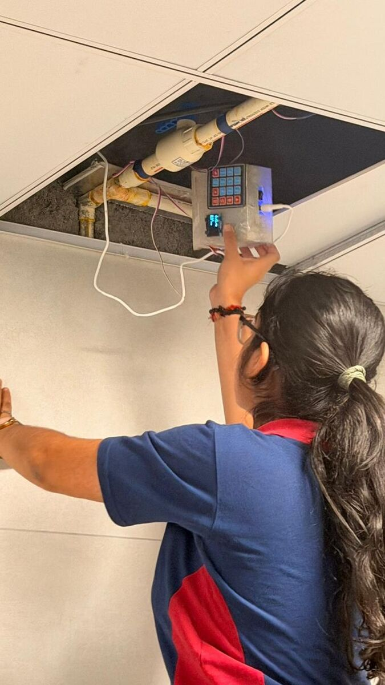
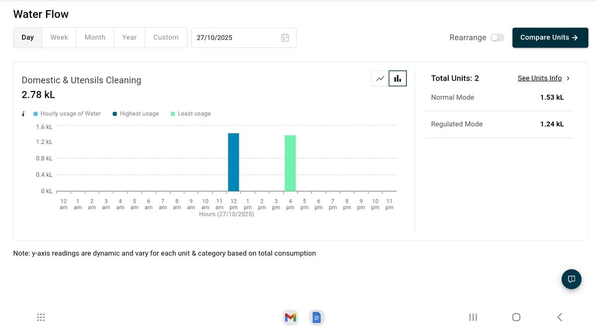

NIRI
I started NIRI in 2023, when I opened the tap one morning and nothing came out. Five of the six borewells in our society had dried up, and we were getting water through tankers. There were plenty of ideas for saving water, but they often needed large infrastructure changes, cost too much, or belonged to someone else—the government or the housing society.
I wanted water conservation to feel simple and intuitive: something people could do every day without feeling that they were doing something extraordinary. NIRI is named after Neeru, the Kannada word for water.
 The NIRI device, with the ball-valve mechanism and exposed gears. |
What I was trying to buildNIRI is a patented, IoT-enabled mechatronic water-conservation system. It is a plug-in extension module for an existing tap or pipeline. A gear system turns a ball valve to precise angles for flow control; the system also includes leak detection, automatic shut-off, and behaviour-driven nudges. The question behind it was: how can individuals participate in water conservation, and how can technology help change behaviour patterns and increase awareness? |
[ASK: NIRI prototype photo] |
Starting from almost nothingI began with very limited hardware and software knowledge. At the ATL lab, I learned about the Arduino microcontroller, its coding language, soldering, and wiring. My first prototype was just an OLED display and a buzzer; when I presented it, the wires burned in what felt like a very theatrical failure. That first failure was useful. Over six iterations, I adapted the power supply for longer battery life when there was no direct electricity connection, simplified the controls, and completely rethought the blocking mechanism. |
The later mechanism uses a servo motor, gears, and a ball valve instead of the earlier relay-and-potentiometer setup. |
Six iterationsThe biggest mechanical change was a complete U-turn: I moved from relays and a potentiometer to a servo motor with a gear mechanism and a ball valve. Every iteration taught me something, and I still do not think the journey is over. |
A NIRI installation on exposed plumbing. |
Stress testingBefore putting the device in other people’s homes or an industrial setting, I tested it for water impurities, water temperature, and calibration drift. The goal was to make sure it could keep working across the conditions it would actually face. |
 Installing NIRI at the Vidyashilp Academy school canteen. |
Deploying and pilotingThe first pilot was at my school canteen, Vidyashilp Academy. I was honestly anxious that the pipe would burst or the gears would buckle under pressure, so I checked on it every hour. My teachers definitely thought something was wrong with me that day. From there, NIRI moved into hospitals and homes, where each site gave me different feedback. |
 Presenting NIRI and its working mechanism to engineers. |
Motor paranoiaAt a government demonstration, just as I began presenting, I heard the low rumble of my motor failing. Fifteen engineers were staring at me and I could not complete the demonstration. I asked to return the next day, then successfully demonstrated the device and its results. I now carry an extra set of every component wherever I go. I call it “motor paranoia.” |
 The NIRI dashboard displays water-flow information by time period and mode. |
What stayed with meNIRI taught me that even the best technology fails if people do not adopt it. Solving big problems does not always take grand gestures; sometimes it takes a simple, efficient solution that makes small changes every day. |